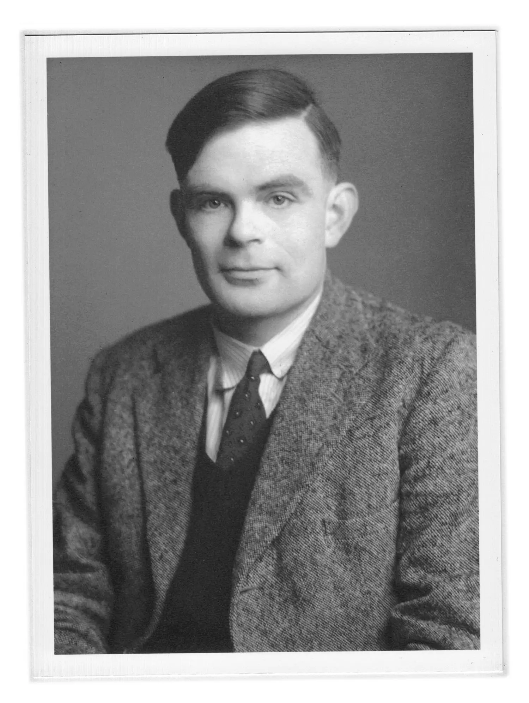

Turing machine and Turing completeness
Main topics:
- Who is Alan Turing
- Turing machine: description and purpose
- Turing completeness of system: definition and meaning
- Examples of Turing-complete systems
Alan Turing was a British mathematician, logician, and computer scientist who is widely regarded as the father of modern computer science.

The most famous Turing inventions:
- During World War II helped crack the Enigma code used by the Germans
- Invented an abstract computer that formalized the definition of an algorithm
- Designed the first computer with a stored program in memory
- Theoretical works on artificial intelligence and the Turing test
Turing machine
Turing machine is a theoretical device that can simulate any algorithmic computation.
- The Turing machine begins with an infinite tape divided into cells, each containing a symbol from a finite set.
- The machine has a read/write head that can move along the tape and read the symbol in the current cell.
- At any given moment, the Turing machine is in a certain state.
- The machine reads the symbol under the head and, based on the current state and symbol, performs a specific action.
- This action can involve writing a new symbol on the tape, moving the head one cell to the left or right, or changing its state.
- The behavior of the Turing machine is determined by its transition function, which maps each combination of current state and symbol to the next state and action to be performed.
- The Turing machine starts in an initial state and continues to execute its actions until it reaches a halting state.
Turing machines are considered universal computers as they can simulate any other computer algorithm.
Turing completeness
Turing completeness is a property of a computational system that can simulate a Turing machine. A computational system is considered Turing complete if it can perform any computation that a Turing machine can, given enough time and resources.
Criteria of Turing completeness